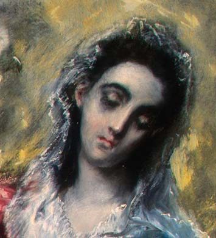
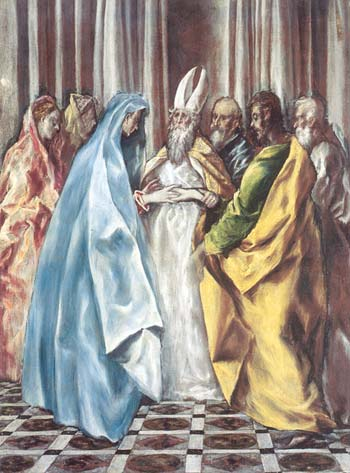
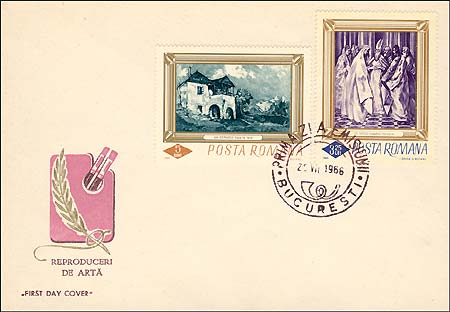

|
The National Museum of Art of Romania The Betrothal of the Virgin |
Born on the island of Crete, Domenikos Theotokopoulos (1541-1614)) acquired the name El Greco -- the Greek -- in Italy and Spain. His emotional style vividly expressed the passion of Counter-Reformation Spain. The haunting intensity of El Greco's paintings -- resulting from their unnaturally long figures and strong contrasts of color and light -- has invited a kind of mythmaking about his life and art. Following his death, El Greco's work fell into obscurity and, after its rediscovery in the last century, was often misunderstood. El Greco has been called a prophet of modern art, a mystic, and even a man whose sight was distorted by astigmatism, all misconceptions that have clouded understanding of his distinctive but deliberate style.

Executed in a surprisingly modern manner, the present canvas (110 x 83 cm) has often been praised for what has been interpreted as EI Greco's anticipation of much later developments in painting. As in other major works by the master from the 1608-1614 period, there are elements in this picture, such as the synthetic approach to forms rendered as colored volumes, which remind us of EI Greco's Venetian apprenticeship.
 |
 |
Among the characters arranged symmetrically around the central axis of the composition one can be identified as the artist; his self-portrait may well be interpreted as an attempt made by EI Greco to lend the New Testament scene a contemporary dimension.

Unlike other themes which EI Greco approached several times throughout his career, that of the marriage of the Virgin is unique in his oeuvre. Its representation broadly follows the lines of Counter-Reformation precepts and agrees with the attitude of Spanish church scholars, who emphasized the virtues of the Virgin as a means of opposing Protestantism. This point is emphatically made by the many iconographic programs focusing on the glorification of the Virgin, as is the case with the Illescas ensemble, executed by EI Greco at the beginning of the seventeenth century. (After Geogiana Stanciu).
The stamp was issued in 1966, in a set of six stamps. This was the first Romanian set of paintings that was issued in big format. The print run of the stamp was of 200,000 pieces. The value of 3.25 Lei represented during a long time the postage for an inland registered letter. The stamps were designed by the painters I. Druga and G. Bozianu. All stamps in the set are covered by a finish. The painting itself is shown in a monochrome violet color. For this reason, in our opinion, it should be one day reissued in its original colors.
For some supplementary information please move the mouse pointer over the images.
| Published:
07/17/2002. Revised:
07/29/02. Copyright © 2002 by Victor Manta, Switzerland. All rights reserved worldwide. |